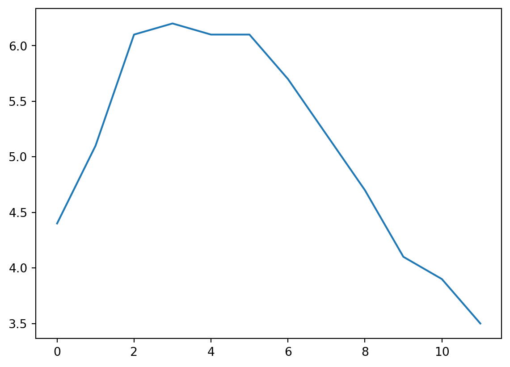

import pandas as pd“Pandas 기본”
“pandas 기본 코드 실습(한글)”
- toc:true
- branch: master
- badges: true
- comments: true
- author: Jiho Yeo
- categories: [jupyter, python]
도구 - 판다스(pandas)
pandas 라이브러리는 사용하기 쉬운 고성능 데이터 구조와 데이터 분석 도구를 제공합니다. 주 데이터 구조는 DataFrame입니다. 이를 인-메모리(in-memory) 2D 테이블로 생각할 수 있습니다(열 이름과 행 레이블이 있는 스프레드시트와 비슷합니다). 엑셀에 있는 많은 기능을 프로그램에서 사용할 수 있습니다. 여기에는 피봇 테이블이나 다른 열을 기반으로 열을 계산하고 그래프 출력하는 기능 등이 포함됩니다. 열 값으로 행을 그룹핑할 수도 있습니다. 또한 SQL과 비슷하게 테이블을 조인할 수 있습니다. 판다스는 시계열 데이터를 다루는데도 뛰어납니다.
필요 라이브러리:
- 넘파이(NumPy) – 넘파이에 익숙하지 않다면 지금 넘파이 튜토리얼을 둘러 보세요.
|
|
설정
먼저 pandas를 임포트합니다. 보통 pd로 임포트합니다:
Series 객체
pandas 라이브러리는 다음과 같은 유용한 데이터 구조를 포함하고 있습니다:
Series객체를 곧 이어서 설명하겠습니다.Series객체는 1D 배열입니다. (열 이름과 행 레이블을 가진) 스프레드시트의 열과 비슷합니다.DataFrame객체는 2D 테이블입니다. (열 이름과 행 레이블을 가진) 스프레드시트와 비슷합니다.
Series 만들기
첫 번째 Series 객체를 만들어 보죠!
import numpy as np
np.array([2,-1,3,5])array([ 2, -1, 3, 5])s = pd.Series([2,-1,3,5])
s0 2
1 -1
2 3
3 5
dtype: int641D ndarray와 비슷합니다
Series 객체는 넘파이 ndarray와 비슷하게 동작합니다. 넘파이 함수에 매개변수로 종종 전달할 수 있습니다:
import numpy as np
np.exp(s)0 7.389056
1 0.367879
2 20.085537
3 148.413159
dtype: float64Series 객체에 대한 산술 연산도 가능합니다. ndarray와 비슷하게 원소별로 적용됩니다:
s + [1000,2000,3000,4000]0 1002
1 1999
2 3003
3 4005
dtype: int64넘파이와 비슷하게 Series에 하나의 숫자를 더하면 Series에 있는 모든 원소에 더해집니다. 이를 브로드캐스팅(broadcasting)이라고 합니다:
s0 2
1 -1
2 3
3 5
dtype: int64s + 10000 1002
1 999
2 1003
3 1005
dtype: int64*나 / 같은 모든 이항 연산과 심지어 조건 연산에서도 마찬가지입니다:
s < 00 False
1 True
2 False
3 False
dtype: bool인덱스 레이블
Series 객체에 있는 각 원소는 인덱스 레이블(index label)이라 불리는 고유한 식별자를 가지고 있습니다. 기본적으로 Series에 있는 원소의 순서입니다(0에서 시작합니다). 하지만 수동으로 인덱스 레이블을 지정할 수도 있습니다:
s2 = pd.Series([68, 83, 112, 68], index=["alice", "bob", "charles", "darwin"])
s2alice 68
bob 83
charles 112
darwin 68
dtype: int64그다음 dict처럼 Series를 사용할 수 있습니다:
s2["bob"]83일반 배열처럼 정수 인덱스를 사용하여 계속 원소에 접근할 수 있습니다:
s2[1]83레이블이나 정수를 사용해 접근할 때 명확하게 하기 위해 레이블은 loc 속성을 사용하고 정수는 iloc 속성을 사용하는 것이 좋습니다:
s2.loc["bob"]83s2.iloc[1]83Series는 인덱스 레이블을 슬라이싱할 수도 있습니다:
s2.iloc[1:3]bob 83
charles 112
dtype: int64기본 정수 레이블을 사용할 때 예상 외의 결과를 만들 수 있기 때문에 주의해야 합니다:
surprise = pd.Series([1000, 1001, 1002, 1003])
surprise0 1000
1 1001
2 1002
3 1003
dtype: int64surprise_slice = surprise[2:]
surprise_slice2 1002
3 1003
dtype: int64보세요. 첫 번째 원소의 인덱스 레이블이 2입니다. 따라서 슬라이싱 결과에서 인덱스 레이블 0인 원소는 없습니다:
try:
surprise_slice[0]
except KeyError as e:
print("키 에러:", e)키 에러: 0하지만 iloc 속성을 사용해 정수 인덱스로 원소에 접근할 수 있습니다. Series 객체를 사용할 때 loc와 iloc를 사용하는 것이 좋은 이유입니다:
surprise_slice.iloc[0]1002dict에서 초기화
dict에서 Series 객체를 만들 수 있습니다. 키는 인덱스 레이블로 사용됩니다:
weights = {"alice": 68, "bob": 83, "colin": 86, "darwin": 68}
s3 = pd.Series(weights)
s3alice 68
bob 83
colin 86
darwin 68
dtype: int64Series에 포함할 원소를 제어하고 index를 지정하여 명시적으로 순서를 결정할 수 있습니다:
s4 = pd.Series(weights, index = ["colin", "alice"])
s4colin 86
alice 68
dtype: int64자동 정렬
여러 개의 Series 객체를 다룰 때 pandas는 자동으로 인덱스 레이블에 따라 원소를 정렬합니다.
s2alice 68
bob 83
charles 112
darwin 68
dtype: int64s3alice 68
bob 83
colin 86
darwin 68
dtype: int64print(s2.keys())
print(s3.keys())
s2 + s3Index(['alice', 'bob', 'charles', 'darwin'], dtype='object')
Index(['alice', 'bob', 'colin', 'darwin'], dtype='object')alice 136.0
bob 166.0
charles NaN
colin NaN
darwin 136.0
dtype: float64만들어진 Series는 s2와 s3의 인덱스 레이블의 합집합을 담고 있습니다. s2에 "colin"이 없고 s3에 "charles"가 없기 때문에 이 원소는 NaN 값을 가집니다(Not-a-Number는 누락이란 의미입니다).
자동 정렬은 구조가 다르고 누락된 값이 있는 여러 데이터를 다룰 때 매우 편리합니다. 하지만 올바른 인덱스 레이블을 지정하는 것을 잊는다면 원치않는 결과를 얻을 수 있습니다:
s5 = pd.Series([1000,1000,1000,1000])
print("s2 =", s2.values)
print("s5 =", s5.values)
s2 + s5s2 = [ 68 83 112 68]
s5 = [1000 1000 1000 1000]alice NaN
bob NaN
charles NaN
darwin NaN
0 NaN
1 NaN
2 NaN
3 NaN
dtype: float64레이블이 하나도 맞지 않기 때문에 판다스가 이 Series를 정렬할 수 없습니다. 따라서 모두 NaN이 되었습니다.
스칼라로 초기화
스칼라와 인덱스 레이블의 리스트로 Series 객체를 초기화할 수도 있습니다: 모든 원소가 이 스칼라 값으로 설정됩니다.
meaning = pd.Series(42, ["life", "universe", "everything"])
meaninglife 42
universe 42
everything 42
dtype: int64Series 이름
Series는 name을 가질 수 있습니다:
s6 = pd.Series([83, 68], index=["bob", "alice"], name="weights")
s6bob 83
alice 68
Name: weights, dtype: int64s6.name'weights'Series 그래프 출력
맷플롯립을 사용해 Series 데이터를 쉽게 그래프로 출력할 수 있습니다(맷플롯립에 대한 자세한 설명은 맷플롯립 튜토리얼을 참고하세요). 맷플롯립을 임포트하고 plot() 메서드를 호출하면 끝입니다:
%matplotlib inline
import matplotlib.pyplot as plt
temperatures = [4.4,5.1,6.1,6.2,6.1,6.1,5.7,5.2,4.7,4.1,3.9,3.5]
s7 = pd.Series(temperatures, name="Temperature")
s7.plot()
plt.show()
데이터를 그래프로 출력하는데 많은 옵션이 있습니다. 여기에서 모두 나열할 필요는 없습니다. 특정 종류의 그래프(히스토그램, 파이 차트 등)가 필요하면 판다스 문서의 시각화 섹션에서 예제 코드를 참고하세요.
시간 다루기
많은 데이터셋에 타임스탬프가 포함되어 있습니다. 판다스는 이런 데이터를 다루는데 뛰어납니다: * (2016Q3 같은) 기간과 (“monthly” 같은) 빈도를 표현할 수 있습니다. * 기간을 실제 타임스탬프로 변환하거나 그 반대로 변환할 수 있습니다. * 데이터를 리샘플링하고 원하는 방식으로 값을 모을 수 있습니다. * 시간대를 다룰 수 있습니다.
시간 범위
먼저 pd.date_range()를 사용해 시계열을 만들어 보죠. 이 함수는 2016년 10월 29일 5:30pm에서 시작하여 12시간마다 하나의 datetime을 담고 있는 DatetimeIndex를 반환합니다.
dates = pd.date_range('2016/10/29 5:30pm', periods=12, freq='H')
datesDatetimeIndex(['2016-10-29 17:30:00', '2016-10-29 18:30:00',
'2016-10-29 19:30:00', '2016-10-29 20:30:00',
'2016-10-29 21:30:00', '2016-10-29 22:30:00',
'2016-10-29 23:30:00', '2016-10-30 00:30:00',
'2016-10-30 01:30:00', '2016-10-30 02:30:00',
'2016-10-30 03:30:00', '2016-10-30 04:30:00'],
dtype='datetime64[ns]', freq='H')pd.date_range('2020-10-07', '2020-10-20', freq='3D')DatetimeIndex(['2020-10-07', '2020-10-10', '2020-10-13', '2020-10-16',
'2020-10-19'],
dtype='datetime64[ns]', freq='3D')이 DatetimeIndex를 Series의 인덱스로 사용할수 있습니다:
temp_series = pd.Series(temperatures, dates)
temp_series2016-10-29 17:30:00 4.4
2016-10-29 18:30:00 5.1
2016-10-29 19:30:00 6.1
2016-10-29 20:30:00 6.2
2016-10-29 21:30:00 6.1
2016-10-29 22:30:00 6.1
2016-10-29 23:30:00 5.7
2016-10-30 00:30:00 5.2
2016-10-30 01:30:00 4.7
2016-10-30 02:30:00 4.1
2016-10-30 03:30:00 3.9
2016-10-30 04:30:00 3.5
Freq: H, dtype: float64이 시리즈를 그래프로 출력해 보죠:
temp_series.plot(kind="bar")
plt.grid(True)
plt.show()리샘플링
판다스는 매우 간단하게 시계열을 리샘플링할 수 있습니다. resample() 메서드를 호출하고 새로운 주기를 지정하면 됩니다:
temp_series_freq_2H = temp_series.resample("2H")
temp_series_freq_2H<pandas.core.resample.DatetimeIndexResampler object at 0x00000186D389D4F0>리샘플링 연산은 사실 지연된 연산입니다. (https://ko.wikipedia.org/wiki/%EB%8A%90%EA%B8%8B%ED%95%9C_%EA%B3%84%EC%82%B0%EB%B2%95) 그래서 Series 객체 대신 DatetimeIndexResampler 객체가 반환됩니다. 실제 리샘플링 연산을 수행하려면 mean() 같은 메서드를 호출할 수 있습니다. 이 메서드는 연속적인 시간 쌍에 대해 평균을 계산합니다:
temp_series_freq_2H = temp_series_freq_2H.mean()temp_series_freq_2H2016-10-29 16:00:00 4.40
2016-10-29 18:00:00 5.60
2016-10-29 20:00:00 6.15
2016-10-29 22:00:00 5.90
2016-10-30 00:00:00 4.95
2016-10-30 02:00:00 4.00
2016-10-30 04:00:00 3.50
Freq: 2H, dtype: float64결과를 그래프로 출력해 보죠:
temp_series_freq_2H.plot(kind="bar")
plt.show()2시간 간격으로 어떻게 값이 수집되었는지 확인해 보세요. 예를 들어 6-8pm 간격을 보면 6:30pm에서 5.1이고 7:30pm에서 6.1입니다. 리샘플링 후에 5.1과 6.1의 평균인 5.6 하나를 얻었습니다. 평균말고 어떤 집계 함수(aggregation function)도 사용할 수 있습니다. 예를 들어 각 기간에서 최솟값을 찾을 수 있습니다:
temp_series_freq_2H = temp_series.resample("2H").mean()
temp_series_freq_2H2016-10-29 16:00:00 4.40
2016-10-29 18:00:00 5.60
2016-10-29 20:00:00 6.15
2016-10-29 22:00:00 5.90
2016-10-30 00:00:00 4.95
2016-10-30 02:00:00 4.00
2016-10-30 04:00:00 3.50
Freq: 2H, dtype: float64또는 동일한 효과를 내는 apply() 메서드를 사용할 수 있습니다:
temp_series_freq_2H = temp_series.resample("2H").apply(np.min)
temp_series_freq_2H2016-10-29 16:00:00 4.4
2016-10-29 18:00:00 5.1
2016-10-29 20:00:00 6.1
2016-10-29 22:00:00 5.7
2016-10-30 00:00:00 4.7
2016-10-30 02:00:00 3.9
2016-10-30 04:00:00 3.5
Freq: 2H, dtype: float64업샘플링과 보간
다운샘플링의 예를 보았습니다. 하지만 업샘플링(즉, 빈도를 높입니다)도 할 수 있습니다. 하지만 데이터에 구멍을 만듭니다:
temp_series_freq_15min = temp_series.resample("15Min").mean()
temp_series_freq_15min.head(n=10) # `head`는 상위 n 개의 값만 출력합니다2016-10-29 17:30:00 4.4
2016-10-29 17:45:00 NaN
2016-10-29 18:00:00 NaN
2016-10-29 18:15:00 NaN
2016-10-29 18:30:00 5.1
2016-10-29 18:45:00 NaN
2016-10-29 19:00:00 NaN
2016-10-29 19:15:00 NaN
2016-10-29 19:30:00 6.1
2016-10-29 19:45:00 NaN
Freq: 15T, dtype: float64한가지 방법은 보간으로 사이를 채우는 것입니다. 이렇게 하려면 interpolate() 메서드를 호출합니다. 기본값은 선형 보간이지만 3차 보간(cubic interpolation) 같은 다른 방법을 선택할 수 있습니다: https://bskyvision.com/789
temp_series_freq_15min = temp_series.resample("15Min").interpolate(method="cubic")
temp_series_freq_15min.head(n=10)2016-10-29 17:30:00 4.400000
2016-10-29 17:45:00 4.452911
2016-10-29 18:00:00 4.605113
2016-10-29 18:15:00 4.829758
2016-10-29 18:30:00 5.100000
2016-10-29 18:45:00 5.388992
2016-10-29 19:00:00 5.669887
2016-10-29 19:15:00 5.915839
2016-10-29 19:30:00 6.100000
2016-10-29 19:45:00 6.203621
Freq: 15T, dtype: float64temp_series.plot(label="Period: 1 hour")
temp_series_freq_15min.plot(label="Period: 15 minutes")
plt.legend()
plt.show()시간대
기본적으로 datetime은 단순합니다. 시간대(timezone)을 고려하지 않죠. 따라서 2016-10-30 02:30는 파리나 뉴욕이나 2016년 10월 30일 2:30pm입니다. tz_localize() 메서드로 시간대를 고려한 datetime을 만들 수 있습니다: https://www.timeanddate.com/time/map/
temp_series2016-10-29 17:30:00 4.4
2016-10-29 18:30:00 5.1
2016-10-29 19:30:00 6.1
2016-10-29 20:30:00 6.2
2016-10-29 21:30:00 6.1
2016-10-29 22:30:00 6.1
2016-10-29 23:30:00 5.7
2016-10-30 00:30:00 5.2
2016-10-30 01:30:00 4.7
2016-10-30 02:30:00 4.1
2016-10-30 03:30:00 3.9
2016-10-30 04:30:00 3.5
Freq: H, dtype: float64temp_series_ny = temp_series.tz_localize("America/New_York")
temp_series_ny2016-10-29 17:30:00-04:00 4.4
2016-10-29 18:30:00-04:00 5.1
2016-10-29 19:30:00-04:00 6.1
2016-10-29 20:30:00-04:00 6.2
2016-10-29 21:30:00-04:00 6.1
2016-10-29 22:30:00-04:00 6.1
2016-10-29 23:30:00-04:00 5.7
2016-10-30 00:30:00-04:00 5.2
2016-10-30 01:30:00-04:00 4.7
2016-10-30 02:30:00-04:00 4.1
2016-10-30 03:30:00-04:00 3.9
2016-10-30 04:30:00-04:00 3.5
dtype: float64모든 datetime에 -04:00이 추가됩니다. 즉 모든 시간은 UTC - 4시간을 의미합니다.
다음처럼 파리 시간대로 바꿀 수 있습니다:
temp_series_paris = temp_series_ny.tz_convert("Europe/Paris")
temp_series_paris2016-10-29 23:30:00+02:00 4.4
2016-10-30 00:30:00+02:00 5.1
2016-10-30 01:30:00+02:00 6.1
2016-10-30 02:30:00+02:00 6.2
2016-10-30 02:30:00+01:00 6.1
2016-10-30 03:30:00+01:00 6.1
2016-10-30 04:30:00+01:00 5.7
2016-10-30 05:30:00+01:00 5.2
2016-10-30 06:30:00+01:00 4.7
2016-10-30 07:30:00+01:00 4.1
2016-10-30 08:30:00+01:00 3.9
2016-10-30 09:30:00+01:00 3.5
dtype: float64UTC와의 차이가 +02:00에서 +01:00으로 바뀐 것을 알 수 있습니다. 이는 프랑스가 10월 30일 3am에 겨울 시간으로 바꾸기 때문입니다(2am으로 바뀝니다). 따라서 2:30am이 두 번 등장합니다! 시간대가 없는 표현으로 돌아가 보죠(시간대가 없이 지역 시간으로 매시간 로그를 기록하는 경우 이와 비슷할 것입니다):
temp_series_paris_naive = temp_series_paris.tz_localize(None)
temp_series_paris_naive2016-10-29 23:30:00 4.4
2016-10-30 00:30:00 5.1
2016-10-30 01:30:00 6.1
2016-10-30 02:30:00 6.2
2016-10-30 02:30:00 6.1
2016-10-30 03:30:00 6.1
2016-10-30 04:30:00 5.7
2016-10-30 05:30:00 5.2
2016-10-30 06:30:00 4.7
2016-10-30 07:30:00 4.1
2016-10-30 08:30:00 3.9
2016-10-30 09:30:00 3.5
dtype: float64이렇게 되면 02:30이 정말 애매합니다. 시간대가 없는 datetime을 파리 시간대로 바꿀 때 에러가 발생합니다:
try:
temp_series_paris_naive.tz_localize("Europe/Paris")
except Exception as e:
print(type(e))
print(e)<class 'pytz.exceptions.AmbiguousTimeError'>
Cannot infer dst time from 2016-10-30 02:30:00, try using the 'ambiguous' argument다행히 ambiguous 매개변수를 사용하면 판다스가 타임스탬프의 순서를 기반으로 적절한 DST(일광 절약 시간제)를 추측합니다:
https://m.blog.naver.com/PostView.naver?isHttpsRedirect=true&blogId=tori-tours&logNo=221221361831
temp_series_paris_naive.tz_localize("Europe/Paris", ambiguous="infer")2016-10-29 23:30:00+02:00 4.4
2016-10-30 00:30:00+02:00 5.1
2016-10-30 01:30:00+02:00 6.1
2016-10-30 02:30:00+02:00 6.2
2016-10-30 02:30:00+01:00 6.1
2016-10-30 03:30:00+01:00 6.1
2016-10-30 04:30:00+01:00 5.7
2016-10-30 05:30:00+01:00 5.2
2016-10-30 06:30:00+01:00 4.7
2016-10-30 07:30:00+01:00 4.1
2016-10-30 08:30:00+01:00 3.9
2016-10-30 09:30:00+01:00 3.5
dtype: float64기간
pd.period_range() 함수는 DatetimeIndex가 아니라 PeriodIndex를 반환합니다. 예를 들어 2016과 2017년의 전체 분기를 가져와 보죠:
quarters = pd.period_range('2016Q1', periods=8, freq='Q')
quartersPeriodIndex(['2016Q1', '2016Q2', '2016Q3', '2016Q4', '2017Q1', '2017Q2',
'2017Q3', '2017Q4'],
dtype='period[Q-DEC]')PeriodIndex에 숫자 N을 추가하면 PeriodIndex 빈도의 N 배만큼 이동시킵니다:
quarters + 3PeriodIndex(['2016Q4', '2017Q1', '2017Q2', '2017Q3', '2017Q4', '2018Q1',
'2018Q2', '2018Q3'],
dtype='period[Q-DEC]')asfreq() 메서드를 사용하면 PeriodIndex의 빈도를 바꿀 수 있습니다. 모든 기간이 늘어나거나 줄어듭니다. 예를 들어 분기 기간을 모두 월별 기간으로 바꾸어 보죠:
quarters.asfreq("M")PeriodIndex(['2016-03', '2016-06', '2016-09', '2016-12', '2017-03', '2017-06',
'2017-09', '2017-12'],
dtype='period[M]')quartersPeriodIndex(['2016Q1', '2016Q2', '2016Q3', '2016Q4', '2017Q1', '2017Q2',
'2017Q3', '2017Q4'],
dtype='period[Q-DEC]')기본적으로 asfreq는 각 기간의 끝에 맞춥니다. 기간의 시작에 맞추도록 변경할 수 있습니다:
quarters.asfreq("M", how="start")PeriodIndex(['2016-01', '2016-04', '2016-07', '2016-10', '2017-01', '2017-04',
'2017-07', '2017-10'],
dtype='period[M]')간격을 늘릴 수도 있습니다: pandas 공식 메뉴얼 참조: https://pandas.pydata.org/pandas-docs/stable/user_guide/timeseries.html
quarters.asfreq("A")PeriodIndex(['2016', '2016', '2016', '2016', '2017', '2017', '2017', '2017'], dtype='period[A-DEC]')물론 PeriodIndex로 Series를 만들 수 있습니다:
quarterly_revenue = pd.Series([300, 320, 290, 390, 320, 360, 310, 410], index = quarters)
quarterly_revenue2016Q1 300
2016Q2 320
2016Q3 290
2016Q4 390
2017Q1 320
2017Q2 360
2017Q3 310
2017Q4 410
Freq: Q-DEC, dtype: int64quarterly_revenue.plot(kind="line")
plt.show()to_timestamp를 호출해서 기간을 타임스탬프로 변경할 수 있습니다. 기본적으로 기간의 첫 번째 날을 반환합니다. 하지만 how와 freq를 지정해서 기간의 마지막 시간을 얻을 수 있습니다:
quarterly_revenue2016Q1 300
2016Q2 320
2016Q3 290
2016Q4 390
2017Q1 320
2017Q2 360
2017Q3 310
2017Q4 410
Freq: Q-DEC, dtype: int64last_hours = quarterly_revenue.to_timestamp(how="end", freq="H")
last_hours2016-03-31 23:59:59.999999999 300
2016-06-30 23:59:59.999999999 320
2016-09-30 23:59:59.999999999 290
2016-12-31 23:59:59.999999999 390
2017-03-31 23:59:59.999999999 320
2017-06-30 23:59:59.999999999 360
2017-09-30 23:59:59.999999999 310
2017-12-31 23:59:59.999999999 410
dtype: int64to_peroid를 호출하면 다시 기간으로 돌아갑니다:
last_hours.to_period()2016Q1 300
2016Q2 320
2016Q3 290
2016Q4 390
2017Q1 320
2017Q2 360
2017Q3 310
2017Q4 410
Freq: Q-DEC, dtype: int64판다스는 여러 가지 시간 관련 함수를 많이 제공합니다. 온라인 문서를 확인해 보세요. 예를 하나 들면 2016년 매월 마지막 업무일의 9시를 얻는 방법은 다음과 같습니다:
months_2022 = pd.period_range("2022", periods=12, freq="M")
one_day_after_last_days = months_2022.asfreq("D") + 1
last_bdays = one_day_after_last_days.to_timestamp() - pd.tseries.offsets.BDay(n=1)
last_bdays.to_period("H") + 9PeriodIndex(['2022-01-31 09:00', '2022-02-28 09:00', '2022-03-31 09:00',
'2022-04-29 09:00', '2022-05-31 09:00', '2022-06-30 09:00',
'2022-07-29 09:00', '2022-08-31 09:00', '2022-09-30 09:00',
'2022-10-31 09:00', '2022-11-30 09:00', '2022-12-30 09:00'],
dtype='period[H]')DataFrame 객체
데이터프레임 객체는 스프레드시트를 표현합니다. 셀 값, 열 이름, 행 인덱스 레이블을 가집니다. 다른 열을 바탕으로 열을 계산하는 식을 쓸 수 있고 피봇 테이블을 만들고, 행을 그룹핑하고, 그래프를 그릴 수 있습니다. DataFrame을 Series의 딕셔너리로 볼 수 있습니다.
DataFrame 만들기
Series 객체의 딕셔너리를 전달하여 데이터프레임을 만들 수 있습니다:
people_dict = {
"weight": pd.Series([68, 83, 112], index=["alice", "bob", "charles"]),
"birthyear": pd.Series([1984, 1985, 1992], index=["bob", "alice", "charles"], name="year"),
"children": pd.Series([0, 3], index=["charles", "bob"]),
"hobby": pd.Series(["Biking", "Dancing"], index=["alice", "bob"]),
}
people = pd.DataFrame(people_dict)
people| weight | birthyear | children | hobby | |
|---|---|---|---|---|
| alice | 68 | 1985 | NaN | Biking |
| bob | 83 | 1984 | 3.0 | Dancing |
| charles | 112 | 1992 | 0.0 | NaN |
몇가지 알아 두어야 할 것은 다음과 같습니다:
Series는 인덱스를 기반으로 자동으로 정렬됩니다.- 누란된 값은
NaN으로 표현됩니다. Series이름은 무시됩니다("year"란 이름은 삭제됩니다).DataFrame은 주피터 노트북에서 멋지게 출력됩니다!
예상하는 방식으로 열을 참조할 수 있고 Series 객체가 반환됩니다:
people["birthyear"]alice 1985
bob 1984
charles 1992
Name: birthyear, dtype: int64동시에 여러 개의 열을 선택할 수 있습니다:
people[["birthyear", "hobby"]]| birthyear | hobby | |
|---|---|---|
| alice | 1985 | Biking |
| bob | 1984 | Dancing |
| charles | 1992 | NaN |
열 리스트나 행 인덱스 레이블을 DataFrame 생성자에 전달하면 해당 열과 행으로 채워진 데이터프레임이 반환됩니다. 예를 들면:
people_dict{'weight': alice 68
bob 83
charles 112
dtype: int64,
'birthyear': bob 1984
alice 1985
charles 1992
Name: year, dtype: int64,
'children': charles 0
bob 3
dtype: int64,
'hobby': alice Biking
bob Dancing
dtype: object}d2 = pd.DataFrame(
people_dict,
columns=["birthyear", "weight", "height"],
index=["bob", "alice", "eugene"]
)d2| birthyear | weight | height | |
|---|---|---|---|
| bob | 1984.0 | 83.0 | NaN |
| alice | 1985.0 | 68.0 | NaN |
| eugene | NaN | NaN | NaN |
DataFrame을 만드는 또 다른 편리한 방법은 ndarray나 리스트의 리스트로 모든 값을 생성자에게 전달하고 열 이름과 행 인덱스 레이블을 각기 지정하는 것입니다:
values = [
[1985, np.nan, "Biking", 68],
[1984, 3, "Dancing", 83],
[1992, 0, np.nan, 112]
]
d3 = pd.DataFrame(
values,
columns=["birthyear", "children", "hobby", "weight"],
index=["alice", "bob", "charles"]
)
d3| birthyear | children | hobby | weight | |
|---|---|---|---|---|
| alice | 1985 | NaN | Biking | 68 |
| bob | 1984 | 3.0 | Dancing | 83 |
| charles | 1992 | 0.0 | NaN | 112 |
누락된 값을 지정하려면 np.nan이나 넘파이 마스크 배열을 사용합니다:
dtype = object는 문자열 데이터를 의미
masked_array = np.ma.asarray(values, dtype=object)
masked_arraymasked_array(
data=[[1985, nan, 'Biking', 68],
[1984, 3, 'Dancing', 83],
[1992, 0, nan, 112]],
mask=False,
fill_value='?',
dtype=object)masked_array = np.ma.asarray(values, dtype=object)
masked_array[(0, 2), (1, 2)] = np.ma.masked
d3 = pd.DataFrame(
masked_array,
columns=["birthyear", "children", "hobby", "weight"],
index=["alice", "bob", "charles"]
)
d3| birthyear | children | hobby | weight | |
|---|---|---|---|---|
| alice | 1985 | NaN | Biking | 68 |
| bob | 1984 | 3 | Dancing | 83 |
| charles | 1992 | 0 | NaN | 112 |
ndarray 대신에 DataFrame 객체를 전달할 수도 있습니다:
d3| birthyear | children | hobby | weight | |
|---|---|---|---|---|
| alice | 1985 | NaN | Biking | 68 |
| bob | 1984 | 3 | Dancing | 83 |
| charles | 1992 | 0 | NaN | 112 |
d4 = pd.DataFrame(
d3,
columns=["hobby", "children"],
index=["alice", "bob"]
)
d4| hobby | children | |
|---|---|---|
| alice | Biking | NaN |
| bob | Dancing | 3 |
딕셔너리의 딕셔너리(또는 리스트의 리스트)로 DataFrame을 만들 수 있습니다:
people = pd.DataFrame({
"birthyear": {"alice":1985, "bob": 1984, "charles": 1992},
"hobby": {"alice":"Biking", "bob": "Dancing"},
"weight": {"alice":68, "bob": 83, "charles": 112},
"children": {"bob": 3, "charles": 0}
})
people| birthyear | hobby | weight | children | |
|---|---|---|---|---|
| alice | 1985 | Biking | 68 | NaN |
| bob | 1984 | Dancing | 83 | 3.0 |
| charles | 1992 | NaN | 112 | 0.0 |
멀티 인덱싱
모든 열이 같은 크기의 튜플이면 멀티 인덱스로 인식합니다. 열 인덱스 레이블에도 같은 방식이 적용됩니다. 예를 들면:
d5 = pd.DataFrame(
{
("public", "birthyear"):
{("Paris","alice"):1985, ("Paris","bob"): 1984, ("London","charles"): 1992},
("public", "hobby"):
{("Paris","alice"):"Biking", ("Paris","bob"): "Dancing"},
("private", "weight"):
{("Paris","alice"):68, ("Paris","bob"): 83, ("London","charles"): 112},
("private", "children"):
{("Paris", "alice"):np.nan, ("Paris","bob"): 3, ("London","charles"): 0}
}
)
d5| public | private | ||||
|---|---|---|---|---|---|
| birthyear | hobby | weight | children | ||
| Paris | alice | 1985 | Biking | 68 | NaN |
| bob | 1984 | Dancing | 83 | 3.0 | |
| London | charles | 1992 | NaN | 112 | 0.0 |
이제 "public" 열을 모두 담은 DataFrame을 손쉽게 만들 수 있습니다:
d5["public"]| birthyear | hobby | ||
|---|---|---|---|
| Paris | alice | 1985 | Biking |
| bob | 1984 | Dancing | |
| London | charles | 1992 | NaN |
d5["public", "hobby"] # d5["public"]["hobby"]와 같습니다.Paris alice Biking
bob Dancing
London charles NaN
Name: (public, hobby), dtype: objectd5["public"]['hobby']Paris alice Biking
bob Dancing
London charles NaN
Name: hobby, dtype: object레벨 낮추기
d5를 다시 확인해 보죠:
d5| public | private | ||||
|---|---|---|---|---|---|
| birthyear | hobby | weight | children | ||
| Paris | alice | 1985 | Biking | 68 | NaN |
| bob | 1984 | Dancing | 83 | 3.0 | |
| London | charles | 1992 | NaN | 112 | 0.0 |
열의 레벨(level)이 2개이고 인덱스 레벨이 2개입니다. droplevel()을 사용해 열 레벨을 낮출 수 있습니다(인덱스도 마찬가지입니다):
d5.columns = d5.columns.droplevel(level = 0)
d5| birthyear | hobby | weight | children | ||
|---|---|---|---|---|---|
| Paris | alice | 1985 | Biking | 68 | NaN |
| bob | 1984 | Dancing | 83 | 3.0 | |
| London | charles | 1992 | NaN | 112 | 0.0 |
d6 = d5.copy()
d6.index = d6.index.droplevel(level = 0)
d6| birthyear | hobby | weight | children | |
|---|---|---|---|---|
| alice | 1985 | Biking | 68 | NaN |
| bob | 1984 | Dancing | 83 | 3.0 |
| charles | 1992 | NaN | 112 | 0.0 |
전치
T 속성을 사용해 열과 인덱스를 바꿀 수 있습니다:
d5| birthyear | hobby | weight | children | ||
|---|---|---|---|---|---|
| Paris | alice | 1985 | Biking | 68 | NaN |
| bob | 1984 | Dancing | 83 | 3.0 | |
| London | charles | 1992 | NaN | 112 | 0.0 |
d6 = d5.T
d6| Paris | London | ||
|---|---|---|---|
| alice | bob | charles | |
| birthyear | 1985 | 1984 | 1992 |
| hobby | Biking | Dancing | NaN |
| weight | 68 | 83 | 112 |
| children | NaN | 3.0 | 0.0 |
레벨 스택과 언스택
stack() 메서드는 가장 낮은 열 레벨을 가장 낮은 인덱스 뒤에 추가합니다:
d6| Paris | London | ||
|---|---|---|---|
| alice | bob | charles | |
| birthyear | 1985 | 1984 | 1992 |
| hobby | Biking | Dancing | NaN |
| weight | 68 | 83 | 112 |
| children | NaN | 3.0 | 0.0 |
d7 = d6.stack()
d7| London | Paris | ||
|---|---|---|---|
| birthyear | alice | NaN | 1985 |
| bob | NaN | 1984 | |
| charles | 1992 | NaN | |
| hobby | alice | NaN | Biking |
| bob | NaN | Dancing | |
| weight | alice | NaN | 68 |
| bob | NaN | 83 | |
| charles | 112 | NaN | |
| children | bob | NaN | 3.0 |
| charles | 0.0 | NaN |
NaN 값이 생겼습니다. 이전에 없던 조합이 생겼기 때문입니다(예를 들어 London에 bob이 없었습니다).
unstack()을 호출하면 반대가 됩니다. 여기에서도 많은 NaN 값이 생성됩니다.
d8 = d7.unstack()
d8| London | Paris | |||||
|---|---|---|---|---|---|---|
| alice | bob | charles | alice | bob | charles | |
| birthyear | NaN | NaN | 1992 | 1985 | 1984 | NaN |
| children | NaN | NaN | 0.0 | NaN | 3.0 | NaN |
| hobby | NaN | NaN | NaN | Biking | Dancing | NaN |
| weight | NaN | NaN | 112 | 68 | 83 | NaN |
unstack을 다시 호출하면 Series 객체가 만들어 집니다:
d9 = d8.unstack()
d9London alice birthyear NaN
children NaN
hobby NaN
weight NaN
bob birthyear NaN
children NaN
hobby NaN
weight NaN
charles birthyear 1992
children 0.0
hobby NaN
weight 112
Paris alice birthyear 1985
children NaN
hobby Biking
weight 68
bob birthyear 1984
children 3.0
hobby Dancing
weight 83
charles birthyear NaN
children NaN
hobby NaN
weight NaN
dtype: objectstack()과 unstack() 메서드를 사용할 때 스택/언스택할 level을 선택할 수 있습니다. 심지어 한 번에 여러 개의 레벨을 스택/언스택할 수도 있습니다:
d10 = d9.unstack(level = (0,1))
d10| London | Paris | |||||
|---|---|---|---|---|---|---|
| alice | bob | charles | alice | bob | charles | |
| birthyear | NaN | NaN | 1992 | 1985 | 1984 | NaN |
| children | NaN | NaN | 0.0 | NaN | 3.0 | NaN |
| hobby | NaN | NaN | NaN | Biking | Dancing | NaN |
| weight | NaN | NaN | 112 | 68 | 83 | NaN |
대부분의 메서드는 수정된 복사본을 반환합니다
눈치챘겠지만 stack()과 unstack() 메서드는 객체를 수정하지 않습니다. 대신 복사본을 만들어 반환합니다. 판다스에 있는 대부분의 메서드들이 이렇게 동작합니다.
Stack & Unstack + Pivot에 대한 설명 참고 https://pandas.pydata.org/docs/user_guide/reshaping.html
Data Reshaping!
Pivot
import pandas._testing as tm
def unpivot(frame):
N, K = frame.shape
data = {
"value": frame.to_numpy().ravel("F"),
"variable": np.asarray(frame.columns).repeat(N),
"date": np.tile(np.asarray(frame.index), K),
}
return pd.DataFrame(data, columns=["date", "variable", "value"])
df = unpivot(tm.makeTimeDataFrame(3))df| date | variable | value | |
|---|---|---|---|
| 0 | 2000-01-03 | A | 0.845824 |
| 1 | 2000-01-04 | A | 0.544290 |
| 2 | 2000-01-05 | A | -0.513239 |
| 3 | 2000-01-03 | B | 1.459039 |
| 4 | 2000-01-04 | B | 0.716638 |
| 5 | 2000-01-05 | B | 0.475834 |
| 6 | 2000-01-03 | C | 1.761366 |
| 7 | 2000-01-04 | C | -1.036727 |
| 8 | 2000-01-05 | C | 1.182743 |
| 9 | 2000-01-03 | D | -0.596384 |
| 10 | 2000-01-04 | D | -0.305634 |
| 11 | 2000-01-05 | D | 0.403161 |
To select out everything for variable A we could do:
filtered = df[df["variable"] == "A"]
filtered| date | variable | value | |
|---|---|---|---|
| 0 | 2000-01-03 | A | 0.845824 |
| 1 | 2000-01-04 | A | 0.544290 |
| 2 | 2000-01-05 | A | -0.513239 |
But suppose we wish to do time series operations with the variables. A better representation would be where the columns are the unique variables and an index of dates identifies individual observations. To reshape the data into this form, we use the DataFrame.pivot() method (also implemented as a top level function pivot()):
pivoted = df.pivot(index="date", columns="variable", values="value")
pivoted| variable | A | B | C | D |
|---|---|---|---|---|
| date | ||||
| 2000-01-03 | 0.845824 | 1.459039 | 1.761366 | -0.596384 |
| 2000-01-04 | 0.544290 | 0.716638 | -1.036727 | -0.305634 |
| 2000-01-05 | -0.513239 | 0.475834 | 1.182743 | 0.403161 |
pivoted.columnsIndex(['A', 'B', 'C', 'D'], dtype='object', name='variable')pivoted.indexDatetimeIndex(['2000-01-03', '2000-01-04', '2000-01-05'], dtype='datetime64[ns]', name='date', freq=None)If the values argument is omitted, and the input DataFrame has more than one column of values which are not used as column or index inputs to pivot(), then the resulting “pivoted” DataFrame will have hierarchical columns whose topmost level indicates the respective value column:
df["value2"] = df["value"] * 2df| date | variable | value | value2 | |
|---|---|---|---|---|
| 0 | 2000-01-03 | A | 0.845824 | 1.691649 |
| 1 | 2000-01-04 | A | 0.544290 | 1.088580 |
| 2 | 2000-01-05 | A | -0.513239 | -1.026477 |
| 3 | 2000-01-03 | B | 1.459039 | 2.918078 |
| 4 | 2000-01-04 | B | 0.716638 | 1.433277 |
| 5 | 2000-01-05 | B | 0.475834 | 0.951669 |
| 6 | 2000-01-03 | C | 1.761366 | 3.522732 |
| 7 | 2000-01-04 | C | -1.036727 | -2.073454 |
| 8 | 2000-01-05 | C | 1.182743 | 2.365487 |
| 9 | 2000-01-03 | D | -0.596384 | -1.192768 |
| 10 | 2000-01-04 | D | -0.305634 | -0.611269 |
| 11 | 2000-01-05 | D | 0.403161 | 0.806322 |
pivoted = df.pivot(index="date", columns="variable")
pivoted| value | value2 | |||||||
|---|---|---|---|---|---|---|---|---|
| variable | A | B | C | D | A | B | C | D |
| date | ||||||||
| 2000-01-03 | 0.845824 | 1.459039 | 1.761366 | -0.596384 | 1.691649 | 2.918078 | 3.522732 | -1.192768 |
| 2000-01-04 | 0.544290 | 0.716638 | -1.036727 | -0.305634 | 1.088580 | 1.433277 | -2.073454 | -0.611269 |
| 2000-01-05 | -0.513239 | 0.475834 | 1.182743 | 0.403161 | -1.026477 | 0.951669 | 2.365487 | 0.806322 |
pivoted['value']| variable | A | B | C | D |
|---|---|---|---|---|
| date | ||||
| 2000-01-03 | 0.845824 | 1.459039 | 1.761366 | -0.596384 |
| 2000-01-04 | 0.544290 | 0.716638 | -1.036727 | -0.305634 |
| 2000-01-05 | -0.513239 | 0.475834 | 1.182743 | 0.403161 |
행 참조하기
people DataFrame으로 돌아가 보죠:
people| birthyear | hobby | weight | children | |
|---|---|---|---|---|
| alice | 1985 | Biking | 68 | NaN |
| bob | 1984 | Dancing | 83 | 3.0 |
| charles | 1992 | NaN | 112 | 0.0 |
loc 속성으로 열 대신 행을 참조할 수 있습니다. DataFrame의 열 이름이 행 인덱스 레이블로 매핑된 Series 객체가 반환됩니다:
people['birthyear']alice 1985
bob 1984
charles 1992
Name: birthyear, dtype: int64people.loc["charles"]birthyear 1992
hobby NaN
weight 112
children 0.0
Name: charles, dtype: objectiloc 속성을 사용해 정수 인덱스로 행을 참조할 수 있습니다:
people.iloc[2]birthyear 1992
hobby NaN
weight 112
children 0.0
Name: charles, dtype: object행을 슬라이싱할 수 있으며 DataFrame 객체가 반환됩니다:
people| birthyear | hobby | weight | children | |
|---|---|---|---|---|
| alice | 1985 | Biking | 68 | NaN |
| bob | 1984 | Dancing | 83 | 3.0 |
| charles | 1992 | NaN | 112 | 0.0 |
people.iloc[1:3]| birthyear | hobby | weight | children | |
|---|---|---|---|---|
| bob | 1984 | Dancing | 83 | 3.0 |
| charles | 1992 | NaN | 112 | 0.0 |
마자믹으로 불리언 배열을 전달하여 해당하는 행을 가져올 수 있습니다:
people[np.array([True, False, True])]| birthyear | hobby | weight | children | |
|---|---|---|---|---|
| alice | 1985 | Biking | 68 | NaN |
| charles | 1992 | NaN | 112 | 0.0 |
불리언 표현식을 사용할 때 아주 유용합니다:
people["birthyear"] < 1990alice True
bob True
charles False
Name: birthyear, dtype: boolpeople[people["birthyear"] < 1990]| birthyear | hobby | weight | children | |
|---|---|---|---|---|
| alice | 1985 | Biking | 68 | NaN |
| bob | 1984 | Dancing | 83 | 3.0 |
열 추가, 삭제
DataFrame을 Series의 딕셔너리처럼 다룰 수 있습니다. 따라서 다음 같이 쓸 수 있습니다:
people| birthyear | hobby | weight | children | |
|---|---|---|---|---|
| alice | 1985 | Biking | 68 | NaN |
| bob | 1984 | Dancing | 83 | 3.0 |
| charles | 1992 | NaN | 112 | 0.0 |
people["age"] = 2022 - people["birthyear"] # "age" 열을 추가합니다
people["over 30"] = people["age"] > 30 # "over 30" 열을 추가합니다
people| birthyear | hobby | weight | children | age | over 30 | |
|---|---|---|---|---|---|---|
| alice | 1985 | Biking | 68 | NaN | 37 | True |
| bob | 1984 | Dancing | 83 | 3.0 | 38 | True |
| charles | 1992 | NaN | 112 | 0.0 | 30 | False |
birthyears = people.pop("birthyear")
del people["children"]birthyearsalice 1985
bob 1984
charles 1992
Name: birthyear, dtype: int64people| hobby | weight | age | over 30 | |
|---|---|---|---|---|
| alice | Biking | 68 | 37 | True |
| bob | Dancing | 83 | 38 | True |
| charles | NaN | 112 | 30 | False |
# 딕셔너리도 유사함
weights = {"alice": 68, "bob": 83, "colin": 86, "darwin": 68}weights.pop("alice")68weights{'bob': 83, 'colin': 86, 'darwin': 68}del weights["bob"]weights{'colin': 86, 'darwin': 68}새로운 열을 추가할 때 행의 개수는 같아야 합니다. 누락된 행은 NaN으로 채워지고 추가적인 행은 무시됩니다:
people.indexIndex(['alice', 'bob', 'charles'], dtype='object')people["pets"] = pd.Series({"bob": 0, "charles": 5, "eugene":1}) # alice 누락됨, eugene은 무시됨
people| hobby | weight | age | over 30 | pets | |
|---|---|---|---|---|---|
| alice | Biking | 68 | 37 | True | NaN |
| bob | Dancing | 83 | 38 | True | 0.0 |
| charles | NaN | 112 | 30 | False | 5.0 |
새로운 열을 추가할 때 기본적으로 (오른쪽) 끝에 추가됩니다. insert() 메서드를 사용해 다른 곳에 열을 추가할 수 있습니다:
people.insert(1, "height", [172, 181, 185])
people| hobby | height | weight | age | over 30 | pets | |
|---|---|---|---|---|---|---|
| alice | Biking | 172 | 68 | 37 | True | NaN |
| bob | Dancing | 181 | 83 | 38 | True | 0.0 |
| charles | NaN | 185 | 112 | 30 | False | 5.0 |
새로운 열 할당하기
assign() 메서드를 호출하여 새로운 열을 만들 수도 있습니다. 이는 새로운 DataFrame 객체를 반환하며 원본 객체는 변경되지 않습니다:
people.assign(
body_mass_index = people["weight"] / (people["height"] / 100) ** 2,
has_pets = people["pets"] > 0
)| hobby | height | weight | age | over 30 | pets | body_mass_index | has_pets | |
|---|---|---|---|---|---|---|---|---|
| alice | Biking | 172 | 68 | 37 | True | NaN | 22.985398 | False |
| bob | Dancing | 181 | 83 | 38 | True | 0.0 | 25.335002 | False |
| charles | NaN | 185 | 112 | 30 | False | 5.0 | 32.724617 | True |
people["body_mass_index"] = people["weight"] / (people["height"] / 100) ** 2
people| hobby | height | weight | age | over 30 | pets | body_mass_index | |
|---|---|---|---|---|---|---|---|
| alice | Biking | 172 | 68 | 37 | True | NaN | 22.985398 |
| bob | Dancing | 181 | 83 | 38 | True | 0.0 | 25.335002 |
| charles | NaN | 185 | 112 | 30 | False | 5.0 | 32.724617 |
del people["body_mass_index"]people| hobby | height | weight | age | over 30 | pets | |
|---|---|---|---|---|---|---|
| alice | Biking | 172 | 68 | 37 | True | NaN |
| bob | Dancing | 181 | 83 | 38 | True | 0.0 |
| charles | NaN | 185 | 112 | 30 | False | 5.0 |
할당문 안에서 만든 열은 접근할 수 없습니다:
try:
people.assign(
body_mass_index = people["weight"] / (people["height"] / 100) ** 2,
overweight = people["body_mass_index"] > 25
)
except KeyError as e:
print("키 에러:", e)키 에러: 'body_mass_index'해결책은 두 개의 연속된 할당문으로 나누는 것입니다:
d6 = people.assign(body_mass_index = people["weight"] / (people["height"] / 100) ** 2)
d6.assign(overweight = d6["body_mass_index"] > 25)| hobby | height | weight | age | over 30 | pets | body_mass_index | overweight | |
|---|---|---|---|---|---|---|---|---|
| alice | Biking | 172 | 68 | 37 | True | NaN | 22.985398 | False |
| bob | Dancing | 181 | 83 | 38 | True | 0.0 | 25.335002 | True |
| charles | NaN | 185 | 112 | 30 | False | 5.0 | 32.724617 | True |
임시 변수 d6를 만들면 불편합니다. assign() 메서드를 연결하고 싶겠지만 people 객체가 첫 번째 할당문에서 실제로 수정되지 않기 때문에 작동하지 않습니다:
try:
(people
.assign(body_mass_index = people["weight"] / (people["height"] / 100) ** 2)
.assign(overweight = people["body_mass_index"] > 25)
)
except KeyError as e:
print("키 에러:", e)키 에러: 'body_mass_index'하지만 걱정하지 마세요. 간단한 방법이 있습니다. assign() 메서드에 함수(전형적으로 lambda 함수)를 전달하면 DataFrame을 매개변수로 이 함수를 호출할 것입니다:
(people
.assign(body_mass_index = lambda df: df["weight"] / (df["height"] / 100) ** 2)
.assign(overweight = lambda df: df["body_mass_index"] > 25)
)| hobby | height | weight | age | over 30 | pets | body_mass_index | overweight | |
|---|---|---|---|---|---|---|---|---|
| alice | Biking | 172 | 68 | 37 | True | NaN | 22.985398 | False |
| bob | Dancing | 181 | 83 | 38 | True | 0.0 | 25.335002 | True |
| charles | NaN | 185 | 112 | 30 | False | 5.0 | 32.724617 | True |
문제가 해결되었군요!
people["body_mass_index"] = people["weight"] / (people["height"] / 100) ** 2
people["overweight"] = people["body_mass_index"]>25people| hobby | height | weight | age | over 30 | pets | body_mass_index | overweight | |
|---|---|---|---|---|---|---|---|---|
| alice | Biking | 172 | 68 | 37 | True | NaN | 22.985398 | False |
| bob | Dancing | 181 | 83 | 38 | True | 0.0 | 25.335002 | True |
| charles | NaN | 185 | 112 | 30 | False | 5.0 | 32.724617 | True |
표현식 평가
판다스가 제공하는 뛰어난 기능 하나는 표현식 평가입니다. 이는 numexpr 라이브러리에 의존하기 때문에 설치가 되어 있어야 합니다.
people| hobby | height | weight | age | over 30 | pets | body_mass_index | overweight | |
|---|---|---|---|---|---|---|---|---|
| alice | Biking | 172 | 68 | 37 | True | NaN | 22.985398 | False |
| bob | Dancing | 181 | 83 | 38 | True | 0.0 | 25.335002 | True |
| charles | NaN | 185 | 112 | 30 | False | 5.0 | 32.724617 | True |
"weight / (height/100) ** 2 > 25"'weight / (height/100) ** 2 > 25'people.eval("weight / (height/100) ** 2 > 25")alice False
bob True
charles True
dtype: bool할당 표현식도 지원됩니다. inplace=True로 지정하면 수정된 복사본을 만들지 않고 바로 DataFrame을 변경합니다:
people.eval("body_mass_index = weight / (height/100) ** 2", inplace=True)
people| hobby | height | weight | age | over 30 | pets | body_mass_index | overweight | |
|---|---|---|---|---|---|---|---|---|
| alice | Biking | 172 | 68 | 37 | True | NaN | 22.985398 | False |
| bob | Dancing | 181 | 83 | 38 | True | 0.0 | 25.335002 | True |
| charles | NaN | 185 | 112 | 30 | False | 5.0 | 32.724617 | True |
'@'를 접두어로 사용하여 지역 변수나 전역 변수를 참조할 수 있습니다:
people| hobby | height | weight | age | over 30 | pets | body_mass_index | overweight | |
|---|---|---|---|---|---|---|---|---|
| alice | Biking | 172 | 68 | 37 | True | NaN | 22.985398 | False |
| bob | Dancing | 181 | 83 | 38 | True | 0.0 | 25.335002 | True |
| charles | NaN | 185 | 112 | 30 | False | 5.0 | 32.724617 | True |
overweight_threshold = 30
people.eval("overweight = body_mass_index > @overweight_threshold", inplace=True)
people| hobby | height | weight | age | over 30 | pets | body_mass_index | overweight | |
|---|---|---|---|---|---|---|---|---|
| alice | Biking | 172 | 68 | 37 | True | NaN | 22.985398 | False |
| bob | Dancing | 181 | 83 | 38 | True | 0.0 | 25.335002 | False |
| charles | NaN | 185 | 112 | 30 | False | 5.0 | 32.724617 | True |
DataFrame 쿼리하기
query() 메서드를 사용하면 쿼리 표현식에 기반하여 DataFrame을 필터링할 수 있습니다:
people| hobby | height | weight | age | over 30 | pets | body_mass_index | overweight | |
|---|---|---|---|---|---|---|---|---|
| alice | Biking | 172 | 68 | 37 | True | NaN | 22.985398 | False |
| bob | Dancing | 181 | 83 | 38 | True | 0.0 | 25.335002 | False |
| charles | NaN | 185 | 112 | 30 | False | 5.0 | 32.724617 | True |
people.query("age > 30 and pets == 0")| hobby | height | weight | age | over 30 | pets | body_mass_index | overweight | |
|---|---|---|---|---|---|---|---|---|
| bob | Dancing | 181 | 83 | 38 | True | 0.0 | 25.335002 | False |
people[(people["age"]>30) & (people["pets"] == 0)]| hobby | height | weight | age | over 30 | pets | body_mass_index | overweight | |
|---|---|---|---|---|---|---|---|---|
| bob | Dancing | 181 | 83 | 38 | True | 0.0 | 25.335002 | False |
mask = (people["age"]>30) & (people["pets"] == 0)people[mask]| hobby | height | weight | age | over 30 | pets | body_mass_index | overweight | |
|---|---|---|---|---|---|---|---|---|
| bob | Dancing | 181 | 83 | 38 | True | 0.0 | 25.335002 | False |
DataFrame 정렬
sort_index 메서드를 호출하여 DataFrame을 정렬할 수 있습니다. 기본적으로 인덱스 레이블을 기준으로 오름차순으로 행을 정렬합니다. 여기에서는 내림차순으로 정렬해 보죠:
people.sort_index(ascending=False)| hobby | height | weight | age | over 30 | pets | body_mass_index | overweight | |
|---|---|---|---|---|---|---|---|---|
| charles | NaN | 185 | 112 | 30 | False | 5.0 | 32.724617 | True |
| bob | Dancing | 181 | 83 | 38 | True | 0.0 | 25.335002 | False |
| alice | Biking | 172 | 68 | 37 | True | NaN | 22.985398 | False |
sort_index는 DataFrame의 정렬된 복사본을 반환합니다. people을 직접 수정하려면 inplace 매개변수를 True로 지정합니다. 또한 axis=1로 지정하여 열 대신 행을 정렬할 수 있습니다:
people.sort_index(axis=1, inplace=True)
people| age | body_mass_index | height | hobby | over 30 | overweight | pets | weight | |
|---|---|---|---|---|---|---|---|---|
| alice | 37 | 22.985398 | 172 | Biking | True | False | NaN | 68 |
| bob | 38 | 25.335002 | 181 | Dancing | True | False | 0.0 | 83 |
| charles | 30 | 32.724617 | 185 | NaN | False | True | 5.0 | 112 |
레이블이 아니라 값을 기준으로 DataFrame을 정렬하려면 sort_values에 정렬하려는 열을 지정합니다:
people.sort_values(by="age", inplace=True)
people| age | body_mass_index | height | hobby | over 30 | overweight | pets | weight | |
|---|---|---|---|---|---|---|---|---|
| charles | 30 | 32.724617 | 185 | NaN | False | True | 5.0 | 112 |
| alice | 37 | 22.985398 | 172 | Biking | True | False | NaN | 68 |
| bob | 38 | 25.335002 | 181 | Dancing | True | False | 0.0 | 83 |
DataFrame 그래프 그리기
Series와 마찬가지로 판다스는 DataFrame 기반으로 멋진 그래프를 손쉽게 그릴 수 있습니다.
예를 들어 plot 메서드를 호출하여 DataFrame의 데이터에서 선 그래프를 쉽게 그릴 수 있습니다:
people.plot(kind = "line", x = "body_mass_index", y = ["height", "weight"])
plt.show()맷플롯립의 함수가 지원하는 다른 매개변수를 사용할 수 있습니다. 예를 들어, 산점도를 그릴 때 맷플롯립의 scatter() 함수의 s 매개변수를 사용해 크기를 지정할 수 있습니다:
people.plot(kind = "scatter", x = "height", y = "weight", s=[40, 120, 200])
plt.show()선택할 수 있는 옵션이 많습니다. 판다스 문서의 시각화 페이지에서 마음에 드는 그래프를 찾아 예제 코드를 살펴 보세요.
- Histogram
df4 = pd.DataFrame(
{
"a": np.random.randn(1000) + 1,
"b": np.random.randn(1000),
"c": np.random.randn(1000) - 1,
},
columns=["a", "b", "c"],
)
plt.figure();
df4.plot.hist(alpha=0.5);<Figure size 672x480 with 0 Axes>df4| a | b | c | |
|---|---|---|---|
| 0 | 1.272288 | 2.136562 | 1.587199 |
| 1 | 0.171101 | 0.210956 | -0.140191 |
| 2 | 3.041074 | -0.218132 | 0.322108 |
| 3 | 0.784005 | -0.229859 | -1.531156 |
| 4 | 1.144468 | -0.162737 | 0.058663 |
| ... | ... | ... | ... |
| 995 | 1.253080 | 1.434197 | -1.731364 |
| 996 | 0.628578 | -0.157078 | -0.785003 |
| 997 | 0.954488 | -1.484172 | 0.023209 |
| 998 | 1.671204 | -3.129176 | -0.654878 |
| 999 | 2.808931 | -0.677892 | -0.923582 |
1000 rows × 3 columns
df4.plot(kind="hist",alpha=0.5, x="a")
plt.show()df4['a'].plot.hist()
plt.show()- Boxplot
df| date | variable | value | value2 | |
|---|---|---|---|---|
| 0 | 2000-01-03 | A | 0.845824 | 1.691649 |
| 1 | 2000-01-04 | A | 0.544290 | 1.088580 |
| 2 | 2000-01-05 | A | -0.513239 | -1.026477 |
| 3 | 2000-01-03 | B | 1.459039 | 2.918078 |
| 4 | 2000-01-04 | B | 0.716638 | 1.433277 |
| 5 | 2000-01-05 | B | 0.475834 | 0.951669 |
| 6 | 2000-01-03 | C | 1.761366 | 3.522732 |
| 7 | 2000-01-04 | C | -1.036727 | -2.073454 |
| 8 | 2000-01-05 | C | 1.182743 | 2.365487 |
| 9 | 2000-01-03 | D | -0.596384 | -1.192768 |
| 10 | 2000-01-04 | D | -0.305634 | -0.611269 |
| 11 | 2000-01-05 | D | 0.403161 | 0.806322 |
df = pd.DataFrame(np.random.rand(10, 5), columns=["A", "B", "C", "D", "E"])
df.plot.box();df = pd.DataFrame(np.random.rand(10, 2), columns=["Col1", "Col2"])
df["X"] = pd.Series(["A", "A", "A", "A", "A", "B", "B", "B", "B", "B"])
df| Col1 | Col2 | X | |
|---|---|---|---|
| 0 | 0.845708 | 0.181844 | A |
| 1 | 0.158249 | 0.145041 | A |
| 2 | 0.381748 | 0.687311 | A |
| 3 | 0.531642 | 0.428755 | A |
| 4 | 0.966709 | 0.799200 | A |
| 5 | 0.132451 | 0.208480 | B |
| 6 | 0.322921 | 0.735572 | B |
| 7 | 0.714673 | 0.837712 | B |
| 8 | 0.965056 | 0.441871 | B |
| 9 | 0.107034 | 0.387606 | B |
plt.figure();
bp = df.boxplot(by="X")<Figure size 672x480 with 0 Axes>다음 pandas code(2)를 통해 더 배워봅시다.